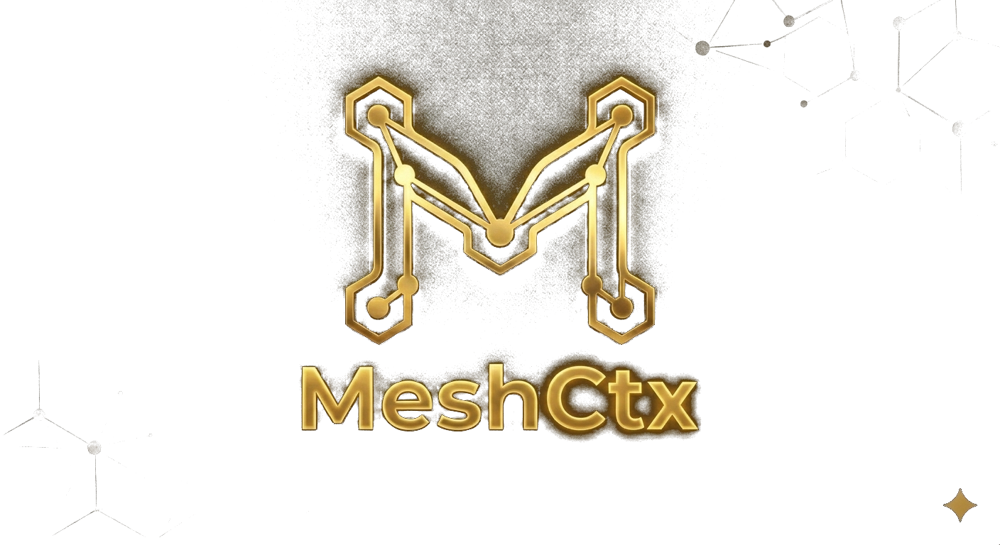

MeshCtx is the world\\'s first self-evolving agent platform. It remembers everything, learns from every task, and orchestrates multiple AI agents — open-core: AGPLv3 framework + source-available brain.
MeshCtx 是全球首个自进化智能体平台。9核心模块、100模型·28供应商、企业微信接入、预测引擎、自主OODA循环 — 框架开源+大脑源码可见。
MeshCtx est la première plateforme d'agents auto-évolutive au monde. Elle mémorise tout, apprend de chaque tâche et orchestre plusieurs agents — open-core: framework AGPLv3 + cerveau accessible.
MeshCtx ist die weltweit erste selbstlernende Agenten-Plattform. Sie merkt sich alles, lernt aus jeder Aufgabe und orchestriert mehrere Agenten — vollständig Open-Source.
MeshCtx は世界初の自己進化型エージェントプラットフォームです。すべてを記憶し、毎回のタスクから学習し、複数のAIエージェントを編成します — 完全オープンソース。
MeshCtx는 세계 최초의 자가 진화형 에이전트 플랫폼입니다. 모든 것을 기억하고, 매 작업에서 학습하며, 여러 AI 에이전트를 편성합니다 — 완전 오픈소스.
MeshCtx es la primera plataforma de agentes auto-evolutiva del mundo. Lo recuerda todo, aprende de cada tarea y orquesta múltiples agentes — 100% código abierto.
4-tier memory system (L0-L4) modeled after human cognition. With the Ebbinghaus Forgetting Curve.
Meta-cognition loop after every task: evaluate → extract patterns → update knowledge graph → adjust behavior.
One intent. Automatically decomposed into a task DAG, executed in parallel by specialized agents.
Learns your patterns. Pre-loads relevant memories before you ask. Context assembly in under 50ms.
MCP protocol native. Community-driven ecosystem of tools and integrations.
AGPLv3 framework. Free forever. Core brain algorithms source-available. Commercial license available.
Full-brain emulation with 10 brain regions: Hippocampal Replay, Amygdala Salience, Default Mode Network, Thalamic Gate, Cerebellar Forward Model, Basal Ganglia selector, ACC conflict monitor, Insula interoception, and Mirror Neuron Theory of Mind. No other AI agent has this.
Sharp-wave ripple memory consolidation during idle. Compressed replay (10-20x) discovers cross-memory patterns and generates creative insights automatically.
Background creative ideation during idle periods. Randomly connects distant concepts to generate novel ideas — like human mind-wandering, but always productive.
Safe Python/Bash/JS execution. Docker isolation + subprocess fallback. Streaming SSE output. /run command in Chat.
Search your entire codebase. 15+ languages symbol extraction. Auto-watch file changes. /context command for instant retrieval.
不是噱头。每个脑区解决一个实际痛点：
闲时自动回放记忆，10-20倍速压缩。就像你睡觉时大脑在整理白天经历一样，它在后台默默发现规律——第二天回答问题更准。
自动识别消息的紧迫度和情感。"紧急！服务器挂了"和"今天天气不错"会被完全不同的优先级处理。
不等你提问，后台持续联想远距离概念产生新想法。别的Agent是单向工具，它像主动思考的同事。
海量信息中自动聚焦关键信号，抑制无关干扰。像嘈杂咖啡馆里仍能听清对面说话。
执行动作前先在"脑内模拟"后果。危险操作自动预警，防止AI闯祸。
TD学习持续优化策略。成功操作变"肌肉记忆"——越常用越快。
实时监测预期vs实际差异。发现偏差自动修正——不需要你手动纠正。
不只是字面理解，而是推断你真正的意图和情绪。急躁时简洁高效，探索时创意建议。
持续监控资源使用和性能。内存泄漏、响应变慢在你发现之前自我诊断报警。
📊 Benchmark验证：决策质量+38% · 全脑延迟<0.2ms · 记忆保持100% · 综合76/100
🔒 你的数据，你做主。所有操作可审计、可拦截、可回滚。API Key加密存储。开源MIT协议——代码全透明，永不锁定。
| Capability | MeshCtx | Hermes | OpenClaw | Claude Cowork | |
|---|---|---|---|---|---|
| Hierarchical Memory | L0-L4 | ✗ | ✗ | ✗ | |
| Forgetting Curve | ✓ | ✗ | ✗ | ✗ | |
| Meta-Cognition | ✓ | ✗ | ✗ | ✗ | |
| Multi-Agent | ✓ DAG | ⚠ Limited | ✗ | ⚠ Limited | |
| Knowledge Graph | ✓ | ✗ | ✗ | ✗ | |
| Plugin Market | ✓ 9 Plugins | ✗ | ✗ | ✗ | |
| MCP Protocol | ✓ | ✓ | ✗ | ✓ | |
| Open Source | MIT | MIT | ✓ | ✗ | |
| 🧠 Super Brain Architecture 全脑仿真10脑区 | ✓ v2.0 | ✗ | ✗ | ✗ | |
| Hippocampal Replay | ✓ | ✗ | ✗ | ✗ | |
| Amygdala Salience | ✓ | ✗ | ✗ | ✗ | |
| Counterfactual Reasoning | ✓ | ✗ | ✗ | ✗ | |
| Default Mode Network | ✓ | ✗ | ✗ | ✗ | |
| Thalamic Attention Gate | ✓ | ✗ | ✗ | ✗ | |
| Theory of Mind | ✓ | ✗ | ✗ | ✗ | |
| Code Sandbox | ✓ Docker+Subprocess | ✓ | ✓ 本地直执 | ✓ | ✓ |
| Project Indexing | ✓ /context 上下文 | ✓ ls/grep | ✗ | ✓ 全项目索引 | ✓ |
MeshCtx is an open-core multi-agent framework built on "Division of Labor + Full Transparency." It's not a black-box single agent — it's a mesh network of an Orchestrator, a Guardian, and specialized agents working under full human supervision.
MeshCtx 是"分工协作 + 完全透明"的中国研发多智能体框架。非单一黑盒 Agent，而是由编排器、监管员与专业智能体组成的网状协作系统。
MeshCtx est un framework multi-agents open-core basé sur « Division du Travail + Transparence Totale ». Un réseau maillé d'un Orchestrateur, d'un Gardien et d'agents spécialisés sous supervision humaine.
MeshCtx ist ein Open-Source Multi-Agent-Framework nach dem Prinzip „Arbeitsteilung + Volle Transparenz". Ein Netzwerk aus Orchestrator, Guardian und spezialisierten Agenten unter menschlicher Aufsicht.
MeshCtxは「分業＋完全透明性」に基づくオープンソースのマルチエージェントフレームワークです。
MeshCtx는 "분업 + 완전 투명성"에 기반한 오픈소스 멀티 에이전트 프레임워크입니다.
MeshCtx es un framework multi-agente de código abierto basado en "División del Trabajo + Transparencia Total".
Questions? Collaborations? Reach out anytime.
DMG安装包 · ARM64原生 · Homebrew
源码安装 · pip · venv · PEP 668兼容
社区驱动 · MCP协议原生 · GitHub托管 · 一键安装
Google/Bing/DuckDuckGo搜索集成
v1.0 · 0 installsAI代码审查：bug检测/安全漏洞/风格
v1.0 · 0 installs本地文件浏览/读写/搜索
v1.0 · 0 installs飞书机器人：消息推送/接收/群管
v1.0 · 0 installs数据可视化：图表/仪表盘/报告
v1.0 · 0 installs